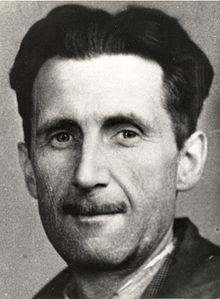

Eric Arthur Blair (Motihari, Raj Británico, 25 de junio de 190312-Londres, Reino Unido, 21 de enero de 1950), más conocido por el pseudónimo de George Orwell, fue un escritor y periodista británico, cuya obra lleva la marca de las experiencias personales vividas por el autor en tres etapas de su vida: su posición en contra del imperialismo británico que lo llevó al compromiso como representante de las fuerzas del orden colonial en Birmania durante su juventud; a favor del socialismo democrático, después de haber observado y sufrido las condiciones de vida de las clases sociales de los trabajadores de Londres y París; y en contra de los totalitarismos nazi y estalinista tras su participación en la Guerra Civil Española.
Inquietante interpretación futurista basada en la crítica a los totalitarismos y a la opresión del poder, situada en 1984 en una sociedad inglesa dominada por un sistema de "colectivismo burocrático" controlada por el Gran Hermano. Londres, 1984: Winston Smith decide rebelarse ante un gobierno totalitario que controla cada uno de los movimientos de sus ciudadanos y castiga incluso a aquellos que delinquen con el pensamiento. Consciente de las terribles consecuencias que puede acarrear la disidencia, Winston se une a la ambigua Hermandad por mediación del líder O’Brien. Paulatinamente, sin embargo, nuestro protagonista va comprendiendo que ni la Hermandad ni O’Brien son lo que aparentan, y que la rebelión, al cabo, quizá sea un objetivo inalcanzable. Por su magnífico análisis del poder y de las relaciones y dependencias que crea en los individuos, 1984 es una de las novelas más inquietantes y atractivas de este siglo